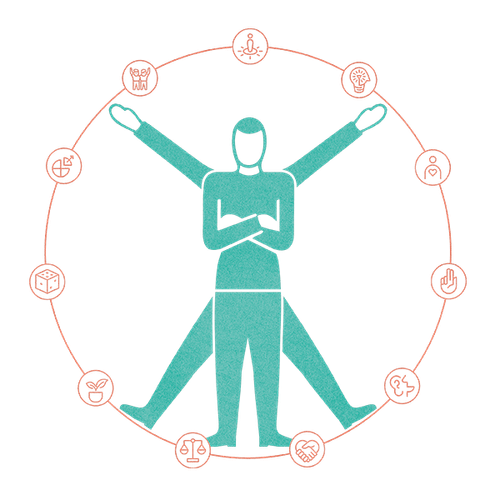

Mit der Academy erhaltet ihr im Business-Plan praxisnahe Lernmodule rund um Facilitation und wirksame Transformation.
Gemeinsam mit 9 Spaces zeigt Plan International Deutschland, wie wertebasiertes Arbeiten Orientierung gibt – nach innen wie nach außen.

Beim Thema Führung ist Ego oft ein Problem. Unser Tool hilft dabei, herauszufinden, ob du als Führungskraft dein Ego im Griff hast.
Ein Tool, um Führungsrollen explizit zu machen und sinnvoll zu priorisieren.
So meisterst du schwierige Gespräche, ohne dass es kracht.
Dieser Workshop hilft euch dabei, auf spielerische Art und Weise Perspektivenvielfalt bei wichtigen Entscheidungen sicherzustellen.